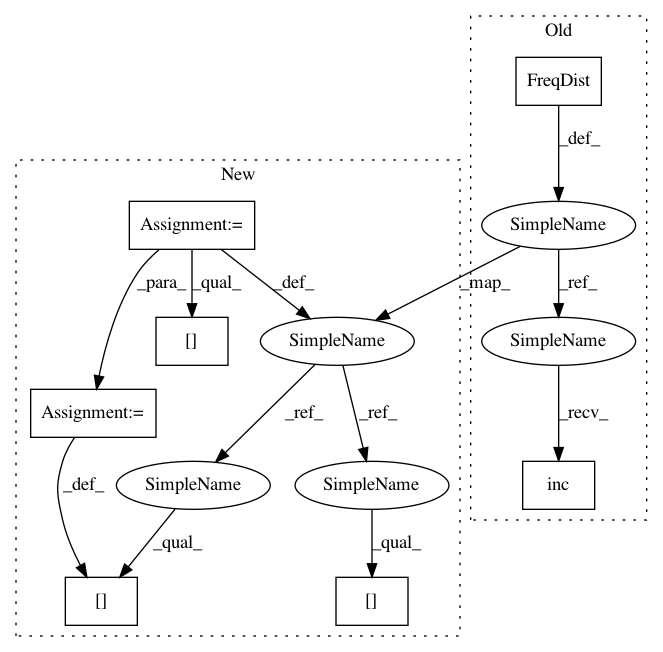

2ca3b0d5a88d414a87c343981b80ed1204b8dd8d,analyze_chunked_corpus.py,,,#,13
Before Change
////////////////////////////
wc = 0
tag_counts = FreqDist()
iob_counts = FreqDist()
tag_iob_counts = ConditionalFreqDist()
word_set = set()
for obj in chunked_corpus.chunked_words():
if isinstance(obj, Tree):
iob_counts.inc(obj.node)
for word, tag in obj.leaves():
wc += 1
word_set.add(word)
tag_counts.inc(tag)
tag_iob_counts[tag].inc(obj.node)
else:
word, tag = obj
wc += 1
word_set.add(word)
tag_counts.inc(tag)
////////////////////////
//// output ////
////////////////////////
After Change
////////////////////////////
wc = 0
tag_counts = collections.defaultdict(int)
iob_counts = collections.defaultdict(int)
tag_iob_counts = collections.defaultdict(lambda: collections.defaultdict(int))
word_set = set()
for obj in chunked_corpus.chunked_words():
if isinstance(obj, Tree):
label = node_label(obj)
iob_counts[label] += 1
for word, tag in obj.leaves():
wc += 1
word_set.add(word)
tag_counts[tag] += 1
tag_iob_counts[tag][label] += 1
else:
word, tag = obj
wc += 1
word_set.add(word)
tag_counts[tag] += 1
////////////////////////
//// output ////
////////////////////////
In pattern: SUPERPATTERN
Frequency: 3
Non-data size: 7
Instances
Project Name: japerk/nltk-trainer
Commit Name: 2ca3b0d5a88d414a87c343981b80ed1204b8dd8d
Time: 2014-01-05
Author: japerk@gmail.com
File Name: analyze_chunked_corpus.py
Class Name:
Method Name:
Project Name: japerk/nltk-trainer
Commit Name: 2ca3b0d5a88d414a87c343981b80ed1204b8dd8d
Time: 2014-01-05
Author: japerk@gmail.com
File Name: analyze_chunked_corpus.py
Class Name:
Method Name:
Project Name: japerk/nltk-trainer
Commit Name: bc128d9596ed07d1c8d5d98f35b1f6905ad4d819
Time: 2014-01-05
Author: japerk@gmail.com
File Name: analyze_tagged_corpus.py
Class Name:
Method Name:
Project Name: japerk/nltk-trainer
Commit Name: 46248d91fbec1af87b58502c7169d3d21ef47376
Time: 2014-04-21
Author: japerk@gmail.com
File Name: nltk_trainer/classification/multi.py
Class Name: AvgProbClassifier
Method Name: classify